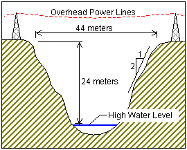

All of the specifications listed below are built into the Bridge
Designer 2016. If you follow the design process,
BD will ensure that you satisfy the specifications. They are
listed here only so that you can better understand the sorts of requirements and constraints
that engineers must consider when they design real bridges.
The Problem
Your are a civil engineer working for the state department of transportation. You have
been assigned responsibility for the design of a truss
bridge to carry a two-lane highway across the river valley shown below.

Design Objective
Satisfy all of the specifications listed below, while keeping the total cost of the
project as low as possible.
Bridge Configuration
The bridge may cross the valley at any elevation from the high water level to 24 meters
above the high water level.
If the elevation of the bridge is below 24 meters, excavation of the river banks will be required to achieve
the correct highway elevation. (The amount of excavation required at each deck
elevation is determined automatically by the Bridge
Designer 2016.)
To provide clearance for overhead power lines (shown above), the highest point on the
bridge may not exceed an elevation 32.5 meters above the high water level (8.5 meters
above the top of the river banks).
The bridge may consist of either standard (simple supports) or (arch supports). If necessary, the bridge may also use one intermediate
, located near the center of the valley. If necessary, the bridge may also use
cable , located 8 meters behind one or both abutments.
Each main truss can have no more than 100 and no more than 200 .
The bridge will have a flat, reinforced deck. Two types of concrete are available:
Medium-strength concrete requires a deck thickness of 23 centimeters (0.23 meter).
High-strength concrete requires a deck thickness of 15 centimeters (0.15 meter).
In either case, the deck will be supported by transverse spaced at 4 meter intervals. (See Component Parts of a Truss Bridge for more information
about these terms.) To accommodate these floor beams, your must have a row of joints spaced 4 meters apart at the level of the deck.
These joints are created automatically when you begin a new design.
The bridge deck will be 10 meters wide, such that it can accommodate two lanes of
traffic.
Member Properties
Materials. Each member of the truss will be made of
either carbon steel, high-strength low-alloy steel, or quenched and tempered steel.
. The members of the truss can be either solid bars or hollow tubes. Both
types of cross-sections are square.
Member Size. Both cross-sections are available in a variety of standard sizes.
Loads
The bridge must be capable of safely carrying the following loads:
Weight of the deck.
Weight of a 5-cm thick , which might be applied at some time in the future.
Weight of the steel floor beams and supplemental bracing members (assumed to be 12.0
applied at each deck-level joint).
Weight of the main trusses.
Either of two possible truck loadings:
Weight of one standard H25 truck loading
per lane, including appropriate allowance for the dynamic effects of the moving
load. (Since the bridge carries two lanes of traffic, each main truss must safely
carry one H25 vehicle, placed anywhere along the length of the deck.)
Weight of a single 480 kN Permit Loading, including appropriate allowance
for the dynamic effects of the moving load. (Since the Permit Loading is assumed to
be centered laterally, each main truss must safely carry one-half of the total
vehicle weight, placed anywhere along the length of the deck.)
Structural Safety
The bridge will comply with the structural provisions of the 1994 LRFD Bridge Design Specification (Load and Design), to include:
The cost of the design will be calculated using the
following cost factors:
Material Cost:
Carbon steel bars - $4.50 per kilogram
Carbon steel tubes - $6.30 per kilogram
High-strength steel bars - $5.00 per kilogram
High-strength steel tubes - $7.00 per kilogram
Quenched and tempered steel bars - $5.55 per kilogram
Quenched and tempered steel tubes - $7.75 per kilogram
Connection Cost: $500.00 per joint
Product Cost: $1000.00 per product
Site Cost:
Reinforced concrete deck (medium strength) - $5,150 per 4-meter panel
Reinforced concrete deck (high strength) - $5,300 per 4-meter panel
Excavation - $1.00 per cubic meter (See the Site
Design Wizard for excavation volume)
Supports (abutments and pier) - Cost varies (See the Site Design Wizard for specific values)
- $6,000 per anchorage
Notes and Tips
The Bridge Designer 2016 ensures that your design
satisfies all of the design specifications listed above. The Drawing
Board is automatically set up so that your bridge has the correct length, height, and supports. BD automatically
calculates the and the resulting member . When you run the , it performs the AASHTO structural safety checks and, if any of the members in your
structural model are not strong enough, it tells you which ones need it be strengthened. It
also calculates the cost of your design automatically.
The AASHTO safety standards have been simplified considerably in the Bridge Designer 2016. That's one important reason why the software
is for educational use only. For more information, see What is Not Realistic about BD.